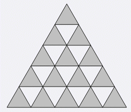

Comet OJ
Comet OJ大三角形的所有短边可以看成由 $(n+1)*n/2$ 个单位三角形的边界组成。如下图的灰色三角形所示。其中第 $1$ 排有 $1$ 个灰色三角形，第 $2$ 排有 $2$ 个灰色三角形，……，第 $n$排有 $n$ 个灰色三角形。所以输入格式是这样规定的：输入第一行为正整数 $n$，其中 $1 \le n \le 1000$，表示大三角形每边的长度。接下来的 $n$ 行，第 $i+1$ 行有 $i$ 组数，从左到右每组数描述一个三角形，每组数都有 $3$ 个数，这 $3$ 个数非 $0$ 即 $1$，表示对应的短边是否被删除，$0$ 表示已被删除，$1$ 表示未被删除，依次按照三角形的左、右、下边的顺序来描述。所以第 $i+1$ 行有 $3i$个数，每个数是 $0$ 或 $1$。
